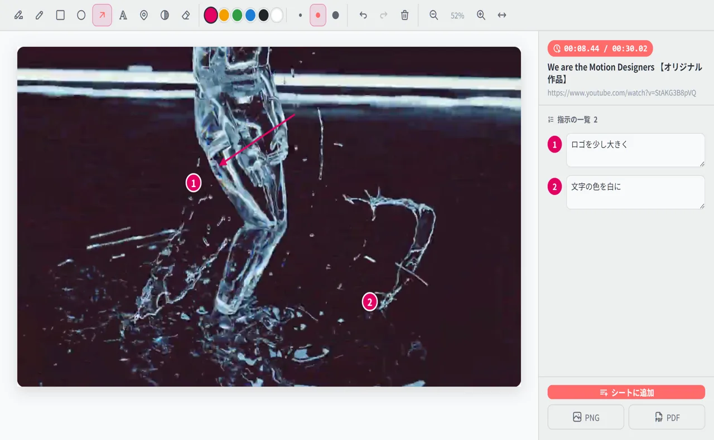

直したい場面で Alt+Shift+C を押し、動画の下に出る欄に指示を書いて Enter を押します。その場面が再生位置つきで指示シートに保存され、動画はそのまま再生を続けます。別のタブは開きません。いちど使うと動画の下に帯が出て「修正モード」になり、2回めからは C を押すだけで止めて書けます。終わるときは Esc か「終わる」です。
📌 修正指示は、3.0.4 から使えます。この記事の画面とボタンの名前は、3.0.5 のものです。PRO の機能ですが、お試し期間中はすべて使えます。
動画の確認は、頭から終わりまで通して見ながら進めるものです。気になった所で止めて、別の画面に移って書いて、また動画に戻る。これを10回くり返すと、見ていた流れが切れてしまいます。3.0.5 の修正指示は、動画のページから離れずに、次々と書ける形にしました。
基本の流れ：止める → 書く → Enter
- 止める：直したい場面で Alt+Shift+C。動画が止まり、動画の下に書く欄が出ます
- 書く：「ロゴを少し大きく」のように、そのまま文を書きます
- Enter：その場面の画像と再生位置、書いた文が保存されて、動画は再生を続けます
保存すると、動画の上に「✓ 00:07 を指示シートに保存しました［シートを開く］」と5秒ほど出ます。たまった指示を見たいときは、そこを押すと指示シートが開きます。

- Alt+Shift+C は設定なしで最初から使えます。ショートカットの設定画面を開く必要はありません
- 日本語の変換を決める Enter では保存しません。文が決まってからの Enter で保存します
- やめるときは Esc。何も保存せずに動画に戻ります
- 止めたまま続けて書きたいときは、欄の「保存したら再生を続ける」を外します
- 全画面で見ているときも、全画面のまま書けます
2回めからは C だけ（修正モード）
いちど使うと、動画の下に細い帯が出ます。帯が出ている間は修正モードで、次のキーが使えます。
| キー | できること |
|---|---|
| C | 止めて、文で書く |
| D | 止めて、絵に書き込む（番号ピン・矢印など） |
| , と . | 1コマ戻す・送る |
| Space | 再生／一時停止 |
| Esc または「終わる」 | 修正モードを終わる |
- コメント欄や検索欄で打っている字は取りません。入力中の「c」で動画が止まることはありません
- 終わると、サイトのもとのキーの動きに戻ります。別のサイトへ移ったときも自動で終わります
- 帯は、撮った画像には写りません

場所を示したいときだけ「絵に書き込む」
「右上のロゴ」のように、文だけで伝わる指示は Enter で済みます。画面のどこかを指したいときだけ、D（または欄の「絵に書き込む」）を押します。同じ画面のまま、止めた場面の上に番号ピンや矢印を書けます。

書き終えたら Ctrl+Enter。保存して動画に戻り、再生が続きます。

使える動画
- YouTube（ショートを含む）・Vimeo・Google ドライブのプレビュー
- ほかのサイトに埋め込まれた動画
- 手元の動画ファイル（専用の画面で、同じキーで書けます）
著作権保護のある動画（動画配信サービスの一部など）は、画面を撮ると黒く写るため使えません。
【実体験】通して見ながら書きたかった
私たちは映像制作の会社で、短い CM でも、1本の確認でいくつも指示が出ます。これまでは、止めるたびに画面を撮り、時間を書き写していました。自社の作品で試したところ、通して1回見ながら C と Enter をくり返すだけで、見終わったときには指示シートができていました。確認の時間を、「見る時間」に近づける。そのために作った形です。
知っておきたいこと
- 保存先はこのパソコンの中：画像と指示はブラウザの中（拡張の保存領域）に残ります。当社には送りません
- 読むもの：動画の位置と大きさ・再生位置・題名だけです。ページの中身は読みません
- プラン：PRO の機能です。お試し期間中はすべて使えます
右クリックからの入口は「【機能ガイド】右クリックメニュー」もどうぞ。
🎬 修正指示のほかにも、いろいろできます。パネルを開く、保存したタブを開く、閉じたタブを履歴から戻す、ページにひもづけたメモ、ピンバーまで。ブラウザとパネルの動きをそのまま見られる 操作ガイド（動く画面で見る10の操作） にまとめています。入れたばかりの方は クイックチュートリアル（5分） からどうぞ。
よくある質問
Q. 動画の修正指示を、動画を見ながら続けて書けますか？
はい。直したい場面で Alt+Shift+C を押すと動画が止まり、動画の下に書く欄が出ます。文を書いて Enter を押すと、その場面が再生位置つきで保存され、動画は再生を続けます。2回めからは C を押すだけです。
Q. ショートカットの設定は必要ですか？
必要ありません。Alt+Shift+C は、入れた直後から使えます。
Q. コメント欄に文字を打っているときに、C で動画が止まりませんか？
止まりません。入力欄で打っている字は取らないようにしています。修正モードを終わると、サイトのもとのキーの動きに戻ります。
Q. 画面の場所を矢印や番号で示したいときは？
修正モードで D を押すか、書く欄の「絵に書き込む」を押します。同じ画面のまま、止めた場面に番号ピンや矢印を書けます。Ctrl+Enter で保存して動画に戻ります。
Q. 全画面で見ているときも使えますか？
使えます。全画面のまま、止めて書いて Enter で再生を続けられます。
▶ 実際の操作を動画で見る
サイドバーで、ブックマークとタブをいっしょに管理する様子です。